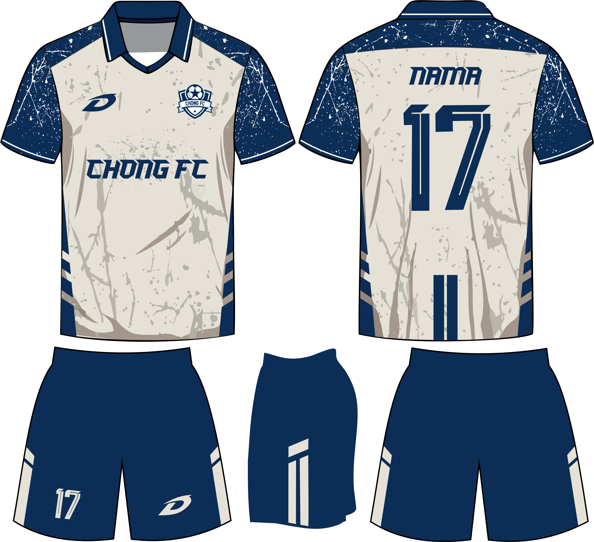
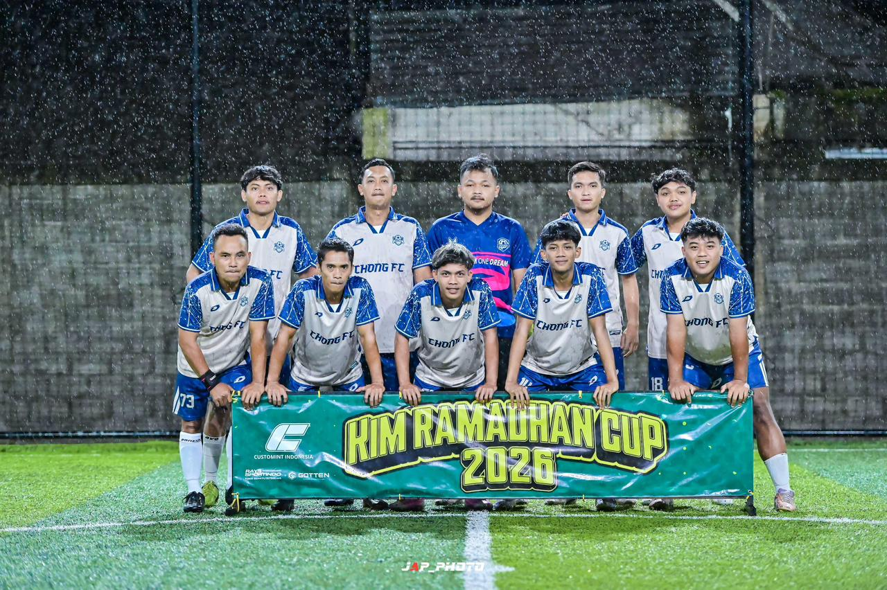
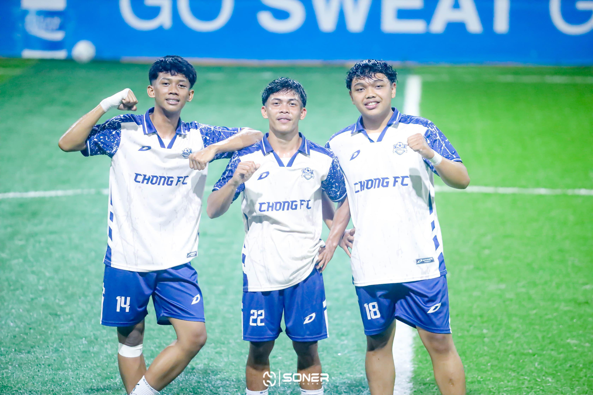

Desain jersey futsal yang dibuat untuk kebutuhan identitas tim olahraga dengan mengutamakan estetika, kenyamanan visual, dan karakter tim.
Proyek ini merupakan desain jersey futsal untuk tim CHONG FC. Desain dibuat dengan mempertimbangkan identitas tim, kombinasi warna yang kuat, serta kenyamanan visual saat digunakan dalam pertandingan maupun kegiatan olahraga lainnya.


